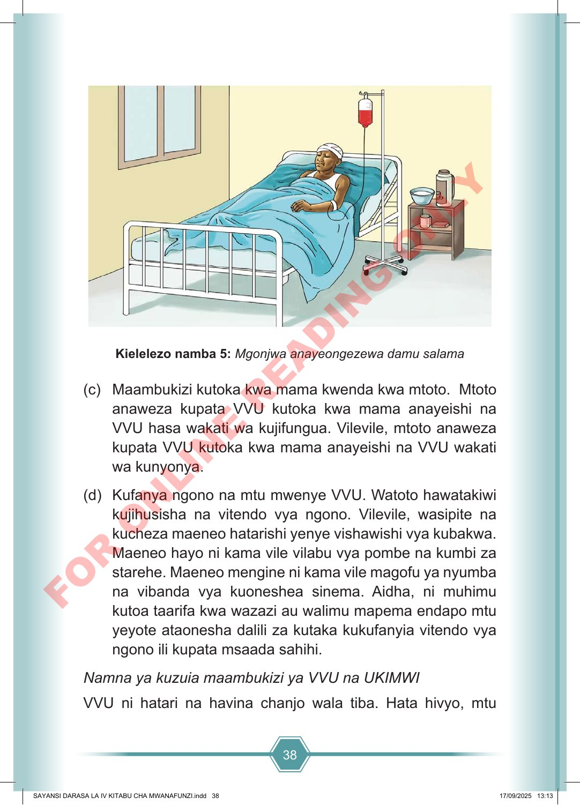

38 Kielelezo namba 5: Mgonjwa anayeongezewa damu salama (c) Maambukizi kutoka kwa mama kwenda kwa mtoto. Mtoto anaweza kupata VVU kutoka kwa mama anayeishi na VVU hasa wakati wa kujifungua. Vilevile, mtoto anaweza kupata VVU kutoka kwa mama anayeishi na VVU wakati wa kunyonya. (d) Kufanya ngono na mtu mwenye VVU. Watoto hawatakiwi kujihusisha na vitendo vya ngono. Vilevile, wasipite na kucheza maeneo hatarishi yenye vishawishi vya kubakwa. Maeneo hayo ni kama vile vilabu vya pombe na kumbi za starehe. Maeneo mengine ni kama vile magofu ya nyumba na vibanda vya kuoneshea sinema. Aidha, ni muhimu kutoa taarifa kwa wazazi au walimu mapema endapo mtu yeyote ataonesha dalili za kutaka kukufanyia vitendo vya ngono ili kupata msaada sahihi. Namna ya kuzuia maambukizi ya VVU na UKIMWI VVU ni hatari na havina chanjo wala tiba. Hata hivyo, mtu SAYANSI DARASA LA IV KITABU CHA MWANAFUNZI.indd 38 SAYANSI DARASA LA IV KITABU CHA MWANAFUNZI.indd 38 17/09/2025 13:13 17/09/2025 13:13 F O R O N L I N E R E A D I N G O N L Y